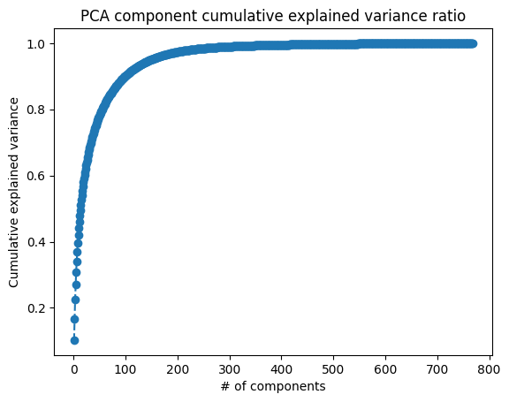
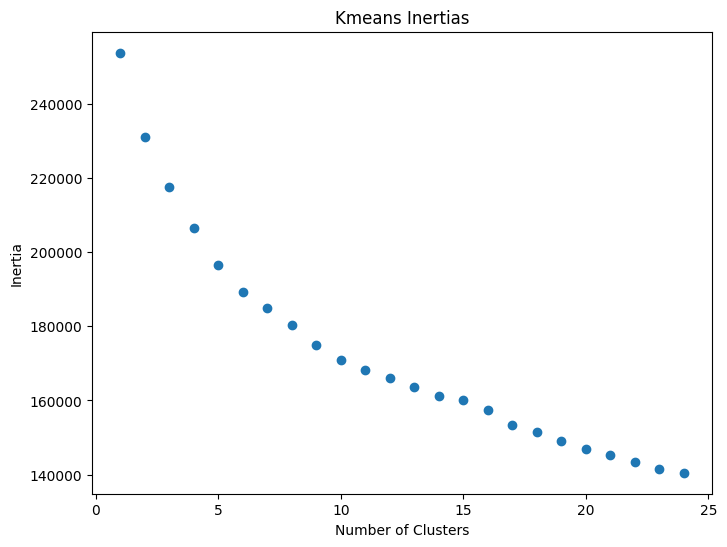
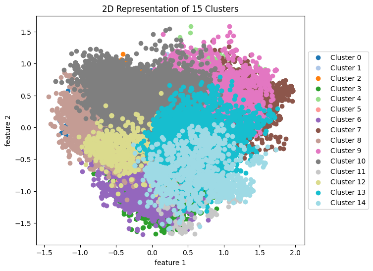
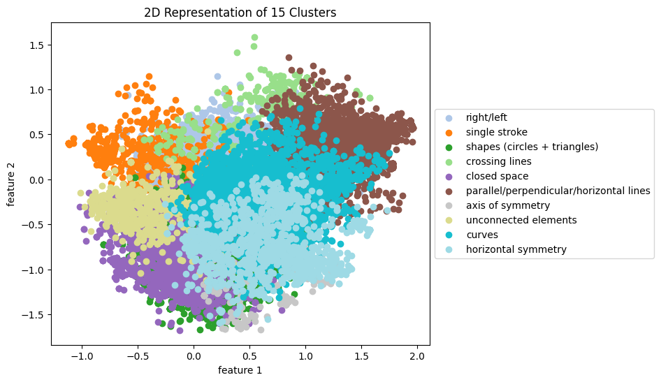

# importing necessary functions
from functions import *
# random state for reproducibility
randomSeed = 5
# Loading data files
embeddings = pd.read_csv("csv_files/embeddings.csv")
embeddings2d = pd.read_csv("csv_files/embeddings2D.csv")Rule Clusters Based on Text Embeddings
The data that was taken from Glyph includes all of the rule descriptions that the users input. In order to analyze these rule descriptions I used text embeddings to generate vectorized versions of the data, and then clustered them using kmeans. This would give me an idea of the patterns in the rules and what kinds of rules could be applied to many different scripts.
Cluster Formation and Visualization
Visualization of rule clusters was made by collapsing the embeddings into 2D and then graphing them based on the cluster nums chosen. The collapsing process has been explored through a variety of methods—T-SNE, PCA, and UMAP—and parameters were changed to get best clustering results. The best method found was first reducing dimensionality using PCA to 80% explained variance (to reduce the noise in the data), clustering using Kmeans, then reducing again down to 2 dimensions using PCA.
Below you see the original PCA dimension reducing, which found that 55 dimensions explained 80% of variance in the rules.
# removing the labels from the embeddings and initializing the pca model
plainEmbeddings = embeddings.drop("Description",axis=1)
pca = PCA()
pca.fit(plainEmbeddings)
x = pca.explained_variance_ratio_
# plotting the explained variance of each number of components
# saves the plot to html_files
plt.plot(range(1,769),pca.explained_variance_ratio_.cumsum(),marker='o',linestyle='--')
plt.title("PCA component cumulative explained variance ratio")
plt.xlabel("# of components")
plt.ylabel("Cumulative explained variance")
plt.savefig("../html_files/explainedVariance.png")
plt.show()
After performing PCA, the next step was to find an appropriate number of clusters. To do this, we graphed the inertias of kmeans clustering from 5 to 25 clusters. There was no clear elbow in the inertias graph, so 15 clusters were used for further analyses (large enough number to divide the rules into clear categories but not too many to parse by hand).
# 80% at 55 components
# uses PCA to collapse down to 55 features
pca=PCA(n_components=55)
pca.fit(plainEmbeddings)
scores_pca = pca.transform(plainEmbeddings)
scores_pca_df = pd.DataFrame(scores_pca)
scores_pca_df["Description"] = range(69027)
# creates a dataframe to hold all of the cluster information for cluster nums between 5 and 25
df = pd.DataFrame()
df["Description"]=embeddings["Description"]
for i in range(5,25):
kmeans_pca = KMeans(n_clusters=i,init='k-means++',random_state=randomSeed)
kmeans = kmeans_pca.fit(scores_pca)
df["Kmeans "+str(i)] = kmeans.labels_
# does kmeans for clusters 1-25 and shows+saves inertias
x = doKmeans(scores_pca_df,range(1,25),saveInertias=True)
After determining the clusters, the dimensionality was further reduced to allow 2d visualization of the clusters as seen below.
# uses PCA to collapse down to 2D for visualization
pca2d=PCA(n_components=2)
pca2d.fit(plainEmbeddings)
scores_pca2d = pca2d.transform(plainEmbeddings)
newEmbeddings2D=pd.DataFrame(scores_pca2d)
# visualizes the clusters
visualize2D(newEmbeddings2D,df,15)
Examining Clusters
To further remove noise from the graph, the clusters were gone through manually using printClusterSet. We can then use this to identify clusters that appear to be mostly random and remove them from our visualization (as in the following graph). In the set of 15 clusters, the ones deemed to not have strong patterns were removed (clusters 0, 5, 8, 9, and 10).
# retrieve specific cluster data from a cluster number
#printClusterSet(df,15)# visualizes the clusters after removing the random clusters
labels = ["random","right/left","single stroke","shapes (circles + triangles)","crossing lines","random","closed space",
"parallel/perpendicular/horizontal lines","random","'lines","random","axis of symmetry","unconnected elements",
"curves","horizontal symmetry"]
visualize2D(newEmbeddings2D,df,15,ignore=[0,5,8,9,10],savefig=True,labels=labels)
Examining clusters also allowed me to concisely summarize the most common rules that participants used. Previous analysis done by the Glyph team identified a list of rules that were applicable across many scripts. I aimed to expand this list with additional rules that were applicable across scripts and could be used to analyze the letters and relationships between them in other analyses.
Original List
- One or more vertical lines
- One or more diagonal lines
- Only straight lines
- Several unconnected elements
- Mirror image in another character
- One or more enclosed spaces
- Vertical Symmetry
- Axial Symmetry
- Can be written in one stroke
- One or more lines crossing
Proposed Additional Rules
- One or more horizontal lines
- Parallel lines
- Contains dots
- One or more acute angles
- One or more right angles
- One or more triangles
- One or more loops
- Split enclosed spaces into one and multiple
- Three or more endpoints